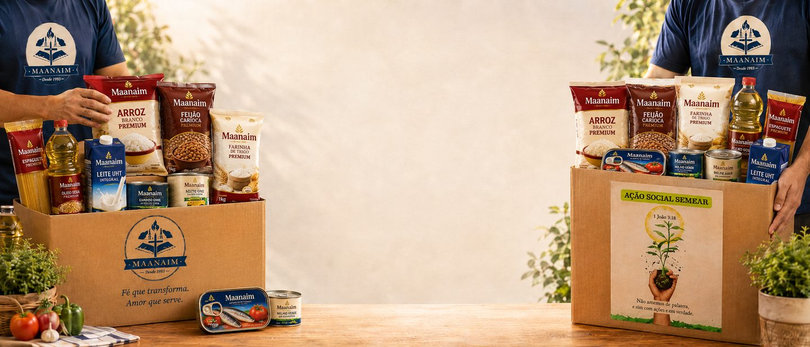
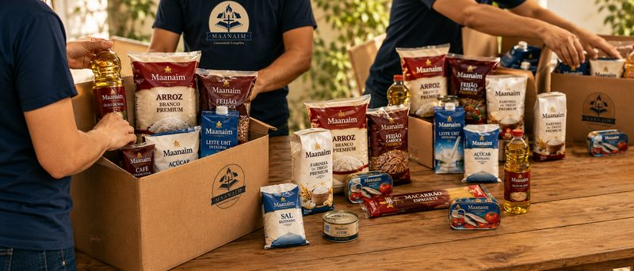
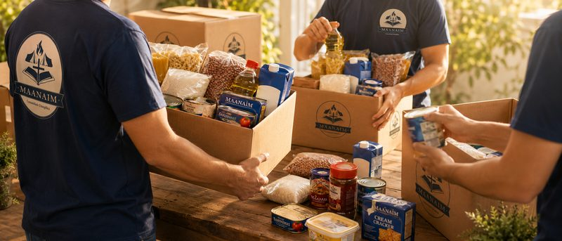
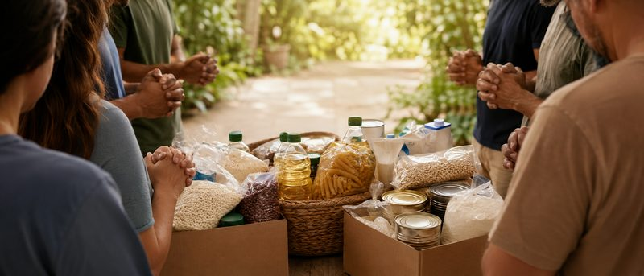

Seja a resposta da
oração de alguém
Como você pode
contribuir?
Cada pessoa tem um dom único. Escolha a forma que mais combina com você.

Alimente uma família hoje
Contribua com cestas básicas, alimentos não-perecíveis. Cada doação alimenta uma família e semeia esperança em Belém.
Quero doar
Doe seu tempo e talento
Ajude na organização, triagem, montagem das cestas e entrega às famílias. Seu tempo e dedicação fazem toda a diferença.
Ser voluntário
Ore e transforme vidas
Ore pelas famílias, pelos voluntários e pela missão. Sua oração é a fundação de tudo que fazemos.
Quero intercederLeve até quem precisa
Ajude no transporte, armazenamento e distribuição das cestas. Seu veículo pode ser o elo que falta para alcançar mais famílias.
Apoiar logística